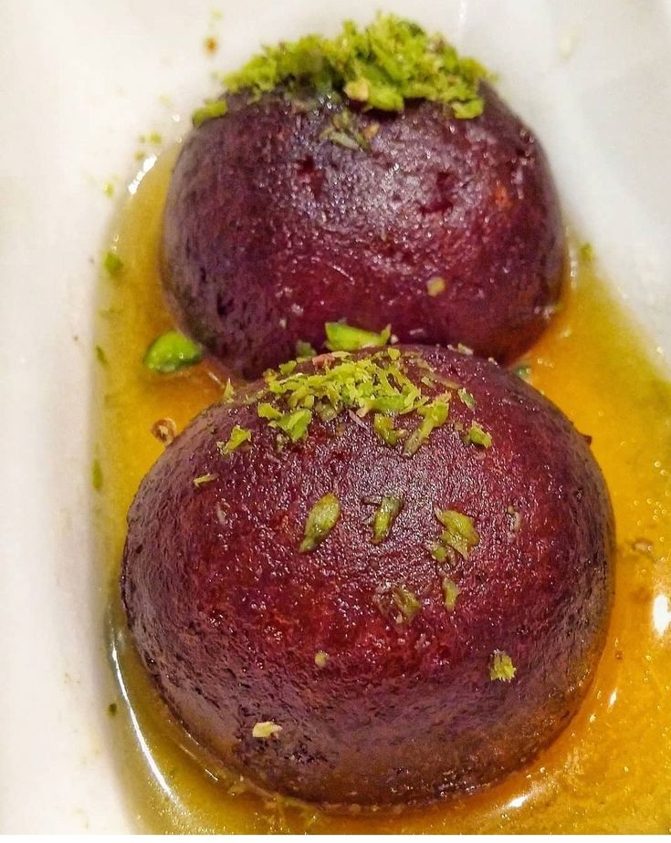

WELCOME
The Taste of
Maharashtra
A place to enjoy authentic Maharashtrian flavours, hearty misal and traditional favourites in the heart of Solapur.
WELCOME
A place to enjoy authentic Maharashtrian flavours, hearty misal and traditional favourites in the heart of Solapur.
THE EXPERIENCE

COME VISIT US
Visit Pavankumar Misal on Jule Solapur Road, opposite Bharati Vidyapeeth School, Solapur.